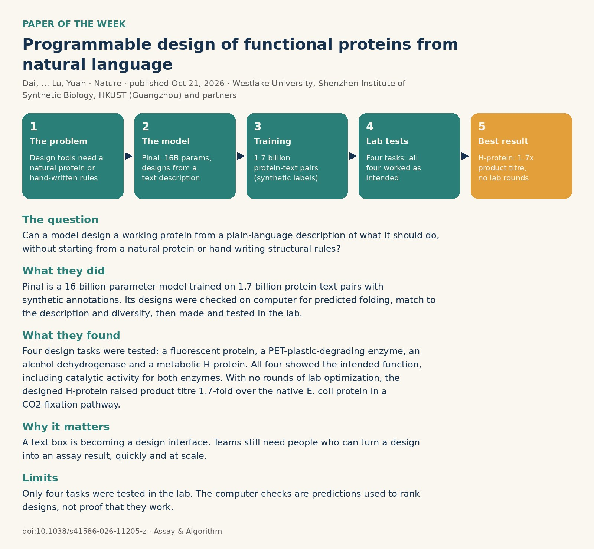

Paper of the week · Nature, Oct 21, 2026
Programmable design of functional proteins from natural language
Dai, … Lu, Yuan · Westlake University, Shenzhen Institute of Synthetic Biology, HKUST (Guangzhou) and partners · Read the paper
A 90-second hand-drawn explainer with on-screen captions and no sound.
The question
Can a model design a working protein from a plain-language description of what it should do, without starting from a natural protein or hand-writing structural rules?
What they did
The team built Pinal, a 16-billion-parameter model trained on 1.7 billion protein–text pairs with automatically generated descriptions. Its designs were checked on computer for predicted folding, match to the description and diversity, then made and tested in the lab.
What they found
Four very different design tasks were tested: a fluorescent protein, a PET-plastic-degrading enzyme, an alcohol dehydrogenase and a metabolic H-protein. All four showed the intended function, including catalytic activity for both enzymes. With no rounds of lab optimization, the designed H-protein raised product titre 1.7-fold over the native E. coli protein in a CO2-fixation pathway.
Why it matters
Describing a function in words can now start a protein design. Teams still need people who can turn a design into an assay result, quickly and at scale.
Limits
Only four tasks were tested in the lab, and the computer checks are predictions used to rank designs, not proof that they work.

This paper was featured in Who builds the robots that run the lab.